Breakthroughs in Replicated Execution#
“A smart contract is a set of promises, specified in digital form, including protocols within which the parties perform on these promises.” – Nick Szabo, Smart Contracts: Building Blocks for Digital Markets, 1996
When every node must reach the same state, every node must run the same
program and get the same result, within bounded resources. This chronology
traces the ideas behind blockchainkit.vm, from reverse Polish notation
to the overflow bugs of token contracts. The argument runs in four steps.
Stack machines give a simple, portable way to run programs (1924-1970).
Computability theory shows that nobody can predict whether an arbitrary
program stops, so execution must be bounded by a budget instead (1936-1966).
Replication needs execution to be deterministic and all-or-nothing
(1978-1981). Smart contracts and blockchains then put these pieces together,
and their attacks show what happens when one piece is missing (1994-2018).
The stack machine is a small teaching design, not the EVM; Exact conventions and model boundaries lists exactly where it differs.
How contracts are designed, broken and verified continues in
Breakthroughs in Smart Contracts.
1924-1957 – Polish and Reverse Polish Notation#
Łukasiewicz wrote logical formulas with each operator before its operands, so that no parentheses or precedence rules are needed. Hamblin, designing compilers for early Australian computers, reversed the order. In reverse Polish notation each operator follows its operands, which is exactly the order in which a machine with one stack computes, left to right:
Dijkstra’s shunting-yard algorithm (1961) converts ordinary infix notation to this order. Every stack virtual machine, including Bitcoin Script and the EVM, runs code in this form.
Implementation: blockchainkit.vm.systems.expressions.to_rpn() (shunting
yard) and blockchainkit.vm.systems.expressions.compile_expression().
References: J. Łukasiewicz, Elementy logiki matematycznej (1929); C. L. Hamblin, Translation to and from Polish notation, The Computer Journal 5(3), 210–213 (1962). DOI.
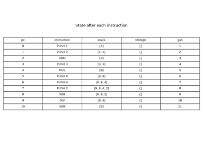
Reverse Polish notation: the stack’s natural order (Łukasiewicz 1924, Hamblin 1957)
1936 – Turing Machines and the Halting Problem#
Turing modeled computation as a machine reading and writing an unbounded tape under a finite table of rules, and proved by diagonalization that no machine decides, for every machine and input, whether it halts. Rice’s theorem extends this to every nontrivial property of a program’s behavior.
For a blockchain, this means a node cannot inspect a stranger’s contract and reject it in advance for never finishing. It can only give each call a budget. Ethereum’s answer is gas: every step costs gas and every call carries a finite amount, so every call ends, either by finishing or by running out of gas. The budget does not decide halting. It makes the question irrelevant.
Implementation: blockchainkit.vm.systems.turing.run_turing_machine()
(with exact cycle detection) and
blockchainkit.vm.systems.turing.enumerate_machines().
References: A. M. Turing, On computable numbers, with an application to the Entscheidungsproblem, Proceedings of the London Mathematical Society s2-42(1), 230–265 (1937; read 1936). DOI.
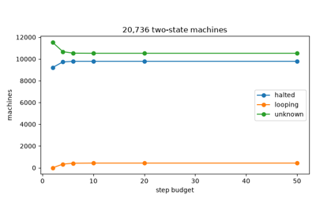
The halting problem: why every call needs a budget (Turing 1936)
1961 – A Hardware Stack: The Burroughs B5000#
Robert Barton designed the Burroughs B5000 to keep intermediate results on a hardware stack instead of in named registers, so that compiled Algol programs mapped directly onto machine operations. The stack needs no register allocation, but it is a finite resource, and the shape of an expression decides how much stack its evaluation needs. Evaluated left to right, \(((1 + 2) + 3) + 4\) never holds more than two values, because each sum is finished before the next operand arrives. \(1 + (2 + (3 + 4))\) holds all four at once, because every addition waits for the one inside it. Virtual machines inherit the limit: the EVM caps its stack at 1024 words, and Bitcoin caps the combined stacks at 1000 items.
Implementation: the stack_limit of
blockchainkit.vm.systems.stack_machine.execute();
blockchainkit.vm.visualizers.plots.plot_stack_height().
References: R. S. Barton, A new approach to the functional design of a digital computer, Proc. Western Joint Computer Conference, 393–396 (1961). DOI.
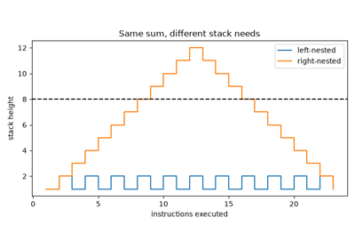
Stack hardware: a bounded stack (Burroughs B5000, Barton 1961)
1962 – Radó’s Busy Beaver#
Among all tiny programs that eventually stop, which runs longest? Radó defined the busy-beaver function \(S(n)\), the most steps any halting \(n\)-state, 2-symbol machine takes from a blank tape, and proved that \(S\) is not computable. The reason is short. If \(S\) were computable, one could decide halting on a blank tape: run an \(n\)-state machine for \(S(n)\) steps, and if it has not stopped by then, it never will. Radó also proved more: \(S\) eventually grows faster than every computable function. The known values are
Lin and Radó settled \(S(3)\) by computer in 1965; \(S(5)\) was proved by the bbchallenge collaboration in 2024. A gas limit plays the role that \(S(n)\) would play, a step count beyond which execution stops. Because the true bound cannot be computed, the limit is chosen by policy instead.
Implementation: blockchainkit.vm.systems.turing.busy_beaver() searches
every machine of a given size.
References: T. Radó, On non-computable functions, Bell System Technical Journal 41(3), 877–884 (1962). DOI; S. Lin and T. Radó, Computer studies of Turing machine problems, Journal of the ACM 12(2), 196–212 (1965). DOI.
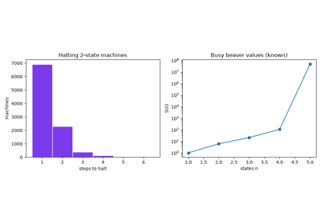
The busy beaver: the longest a small machine can run (Radó 1962)
1966 – Böhm and Jacopini: Sequence, Selection, Iteration#
Böhm and Jacopini proved that three building blocks suffice to express any flowchart, given extra Boolean variables if needed: do this then that, choose between two paths, and repeat while a condition holds. Dijkstra’s Go To Statement Considered Harmful (1968) turned the result into a discipline. On a stack machine the three constructs are straight-line code, a conditional jump, and a backward jump.
Only iteration can make a program run longer than it is. Without backward jumps, each instruction runs at most once, so running time is bounded by program length. With them, a loop can run for as long as its input asks, and that is what makes gas necessary. Bitcoin Script leaves out backward jumps entirely.
Implementation: blockchainkit.vm.systems.assembler.assemble(), a
two-pass assembler that resolves labels to addresses.
References: C. Böhm and G. Jacopini, Flow diagrams, Turing machines and languages with only two formation rules, Communications of the ACM 9(5), 366–371 (1966). DOI.
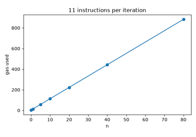
Structured programming: sequence, selection, iteration (Böhm and Jacopini 1966)
1970 – Forth and Stack Words#
Charles Moore developed Forth around 1970 to control radio telescopes. Instead
of naming variables, a Forth program shuffles the values on its data stack with
a few small words, documented by stack diagrams such as OVER ( a b -- a b a )
and ROT ( a b c -- b c a ). The language is tiny, fast, and easy to
implement on small machines. Bitcoin’s Script is explicitly Forth-like, and the
EVM has whole families of DUP and SWAP instructions.
Implementation: the DUP, DROP, SWAP, OVER and ROT opcodes
of blockchainkit.vm.systems.stack_machine.execute(), whose stack effects
are listed in blockchainkit.vm.systems.stack_machine.STACK_EFFECTS.
References: E. D. Rather, D. R. Colburn and C. H. Moore, The evolution of Forth, HOPL-II, 177–199 (1993). DOI.
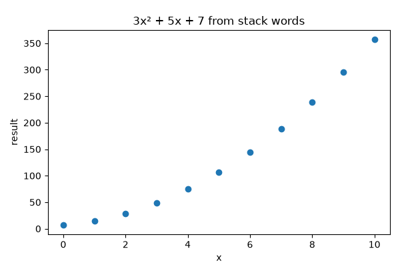
Forth: programming with stack words (Moore 1970)
1978-1990 – State-Machine Replication#
Lamport’s 1978 paper showed how a total order of commands lets distributed processes simulate one state machine, and Schneider’s 1990 tutorial made state machine replication the general recipe for fault-tolerant services: copies that start alike and apply the same requests in the same order stay identical. The recipe needs two things, agreement on the order of inputs and deterministic execution. A blockchain supplies the first with consensus and the second with a virtual machine that has no access to clocks, randomness or the network.
Implementation: the determinism of
blockchainkit.vm.systems.stack_machine.execute(): the same program,
storage and arguments always give the same result.
References: L. Lamport, Time, clocks, and the ordering of events in a distributed system, Communications of the ACM 21(7), 558–565 (1978); F. B. Schneider, Implementing fault-tolerant services using the state machine approach: a tutorial, ACM Computing Surveys 22(4), 299–319 (1990). DOI.
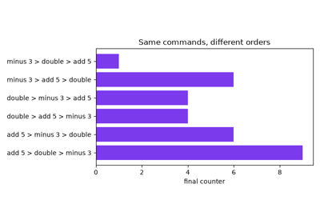
State-machine replication: same inputs, same order, same state (Lamport 1978, Schneider 1990)
1981 – Gray’s Transaction Concept#
A transfer must either fully happen or not happen at all. Jim Gray defined transactions as units of work that are atomic, consistent and durable (isolation was added later to make the ACID properties). Atomicity means that a failure at any point leaves no partial effects. Every Ethereum call is a transaction in this sense: when execution reverts or runs out of gas, all of its storage writes are discarded, although the gas spent is still paid.
Implementation: blockchainkit.vm.systems.stack_machine.execute() runs
on a copy of storage and returns it only on success; REVERT aborts
deliberately.
References: J. Gray, The transaction concept: virtues and limitations, Proc. 7th International Conference on Very Large Data Bases, 144–154 (1981).
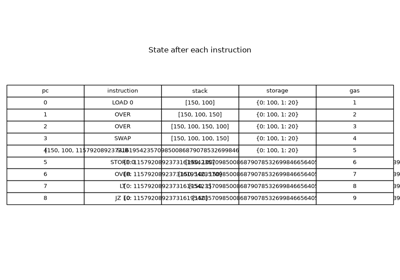
Atomic transactions: all or nothing (Gray 1981)
1994 – Szabo’s Smart Contracts#
Some agreements can be enforced by a machine instead of a court: a vending machine sells to anyone who pays, and nobody can take the goods without paying. Nick Szabo coined smart contract for computerized protocols that execute the terms of a contract, gave the vending machine as their ancestor, and argued that they could reduce the need for trusted intermediaries. Ethereum made the idea practical by putting contract code and state on a blockchain, where every node executes it and anyone can check the result.
Implementation: blockchainkit.vm.systems.programs.vending_machine(),
run with the arguments of
blockchainkit.vm.systems.stack_machine.execute().
References: N. Szabo, Smart contracts (1994); N. Szabo, Formalizing and securing relationships on public networks, First Monday 2(9) (1997). DOI.
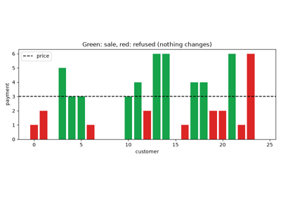
Smart contracts: the vending machine (Szabo 1994)
1995 – Bytecode Verification#
Gosling’s design of the Java virtual machine checked downloaded bytecode before running it, by a data-flow analysis over every path: no instruction may pop more values than are present, and paths that meet must agree on the stack’s shape. Because the check covers every path, verified code can run without run-time stack checks, and its stack size is known in advance. Rice’s theorem is not contradicted: the verifier checks the form of the code on every path, whether or not that path can ever run, so it is decidable, and it rejects some programs that would in fact behave well. The same idea of validating code once, at deployment, is behind Ethereum’s EVM Object Format proposals.
Implementation: blockchainkit.vm.systems.verifier.verify_bytecode(), an
abstract interpretation of stack heights only; the JVM verifier also infers the
type of every stack slot and local variable.
References: J. Gosling, Java intermediate bytecodes, ACM SIGPLAN Workshop on Intermediate Representations, 111–118 (1995). DOI.
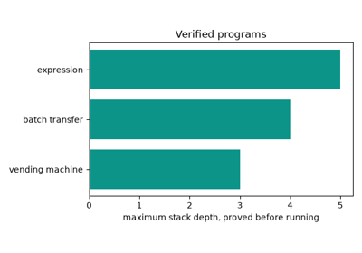
Bytecode verification: check before you run (Gosling 1995)
2009 – Bitcoin Script and Pay-to-Public-Key-Hash#
Bitcoin’s first release locked each coin with a tiny program in Script, a stack
language with no loops. To spend the coin, one supplies the inputs that make the
program succeed. The common lock
OP_DUP OP_HASH160 <hash> OP_EQUALVERIFY OP_CHECKSIG pays whoever shows a
public key with that hash and a valid signature by it. The spender pushes a
signature and a public key. OP_DUP copies the key, OP_HASH160 hashes the
copy, OP_EQUALVERIFY stops unless that hash matches the lock, and
OP_CHECKSIG checks the signature against the key. Without loops, execution
time is bounded by script length, so Bitcoin needs no gas.
Until 2010 the unlocking and locking scripts were concatenated and run as one
program. OP_RETURN then ended execution early with whatever was on the
stack, so an unlocking script ending in OP_TRUE OP_RETURN succeeded before
the lock’s checks ever ran (CVE-2010-5141). The two scripts are now run
separately.
Implementation: blockchainkit.vm.systems.script.verify_script(),
blockchainkit.vm.systems.script.p2pkh_locking() and
blockchainkit.vm.systems.script.p2pkh_unlocking() support a small opcode
subset on big-endian numbers, use OP_HASH256 in place of OP_HASH160,
and check this package’s Schnorr signatures over an explicit message rather
than a transaction digest.
References: S. Nakamoto, Bitcoin v0.1 source code, script.cpp (2009);
Bitcoin Script documentation.
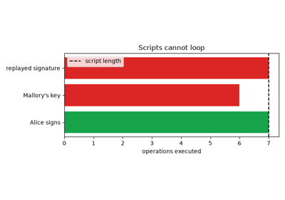
Bitcoin Script: pay to public-key hash (Nakamoto 2009)
2014 – Ethereum and Programmable Replicated State#
Ethereum’s whitepaper describes a blockchain as a state-transition system whose rules can include programmable contracts, so participants agree on program results as well as payments. Replication requires deterministic execution, and a gas budget stops any one program from consuming unlimited computation:
Words are 256 bits, wide enough for hashes and keys.
Implementation: blockchainkit.vm.systems.stack_machine.execute() is a
256-bit stack machine with integer storage, branches, a stack bound, and an
instruction budget. It works on a copy of storage and returns a new state only
on success. Every instruction costs one gas unit by default, and there are no
memory, contract calls, logs or refunds: this is not the EVM.
References: V. Buterin, A Next-Generation Smart Contract and Decentralized Application Platform (2014). Original whitepaper maintained by Ethereum. The historical design is not a specification of the present-day Ethereum network.
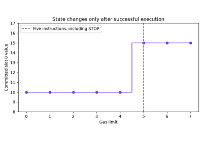
Ethereum: a replicated computer metered by gas (Buterin 2014)
2015-2016 – Hash Time-Locked Contracts#
“Bob gets this money if he reveals the secret behind this hash; if he does not
by a deadline, Alice gets it back.” Peter Todd’s OP_CHECKLOCKTIMEVERIFY
(BIP 65, activated in 2015) let a script refuse a spend before a given time.
Combined with a hash lock it gives the hash time-locked contract: pay on
revealing a preimage, or refund after a timeout. Poon and Dryja’s Lightning
Network chains HTLCs that share one hash along a route of payment channels:
revealing the preimage at the last hop lets every earlier hop claim too.
Timeouts grow toward the sender, so an intermediary that is paid out
downstream with the preimage still has time to claim from upstream before its
own refund deadline passes.
Implementation: blockchainkit.vm.systems.script.htlc_locking() and the
locktime argument of blockchainkit.vm.systems.script.verify_script().
Lock times are compared as plain numbers; Lightning also uses relative
timelocks (OP_CHECKSEQUENCEVERIFY) and penalty transactions, which are not
modeled.
References: P. Todd, BIP 65: OP_CHECKLOCKTIMEVERIFY (2014). Specification; J. Poon and T. Dryja, The Bitcoin Lightning Network: scalable off-chain instant payments (2016).
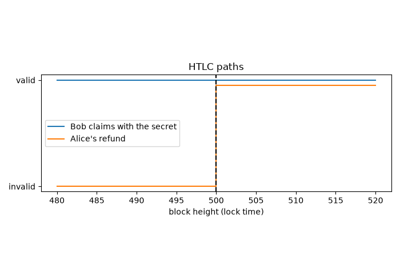
Hash time-locked contracts: pay for a secret, or get a refund (2015-2016)
2016 – The DAO and Reentrancy#
The DAO was a crowdfunded investment contract holding about 14% of all ether. Its split function sent ether before zeroing the caller’s balance, and sending ether to a contract runs that contract’s code. In June 2016 an attacker’s contract called the function again from inside each payment. Because the balance had not yet been zeroed, every nested call passed the balance check and paid out the full deposit again, and the attacker drained about 3.6 million ether. Ethereum hard-forked to reverse the theft, and the dissenting chain continues as Ethereum Classic. Reentrancy became the canonical smart-contract bug, avoided by the checks-effects-interactions order: update state before any external call.
Implementation: blockchainkit.vm.systems.reentrancy.drain_bank(), a
Python model of the call pattern with an attacker whose fallback re-enters, not
EVM execution; the DAO’s real split function also involved token balances and a
waiting period.
References: N. Atzei, M. Bartoletti and T. Cimoli, A survey of attacks on Ethereum smart contracts (SoK), POST 2017, LNCS 10204, 164–186 (2017). DOI.
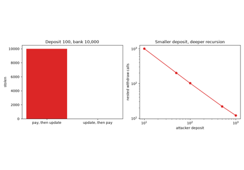
The DAO and reentrancy: checks, effects, interactions (2016)
2016 – Gas Repricing after Denial-of-Service Attacks#
If an operation costs little gas but a lot of real work, an attacker can fill
blocks with it and slow every node down. In September 2016 attackers spammed
Ethereum with transactions calling underpriced, disk-heavy instructions such as
EXTCODESIZE, making blocks take far longer to process. EIP-150 (the
Tangerine Whistle fork, October 2016) raised their prices: SLOAD from 50
to 200 gas, BALANCE from 20 to 400, EXTCODESIZE and CALL to 700.
Gas prices are security parameters, because an attacker always picks the
instruction with the most work per unit of gas.
Implementation: the gas_costs schedule of
blockchainkit.vm.systems.stack_machine.execute(). The real-work costs in
the experiment are teaching estimates, not measurements of any Ethereum client.
References: V. Buterin, EIP-150: Gas cost changes for IO-heavy operations (2016). Specification.
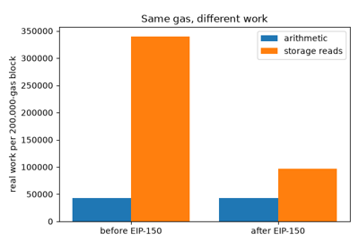
Gas repricing after denial-of-service attacks (EIP-150, 2016)
2018 – Integer Overflow: BeautyChain#
Machine integers wrap around like a car’s odometer. In April 2018 an attacker
called the BeautyChain token’s batchTransfer with two recipients and
value \(= 2^{255}\). The contract computed the total as
so the contract checked that the sender held at least 0 tokens, which passed for a sender who had nothing, subtracted 0, and credited each recipient with \(2^{255}\) tokens, \(2^{256}\) in total, created from nothing (CVE-2018-10299). Exchanges suspended the token. Checked arithmetic, through the SafeMath library and since Solidity 0.8 by default, detects the wrap and reverts instead. SafeMath’s test is that dividing the product by one factor gives back the other, which fails here because \(0 / 2 \ne 2^{255}\).
Implementation: blockchainkit.vm.systems.programs.batch_transfer() is a
stack-machine program with storage slots as accounts, not the Solidity
contract; checked=True adds the SafeMath test amount / count == value.
References: CVE-2018-10299 (2018).
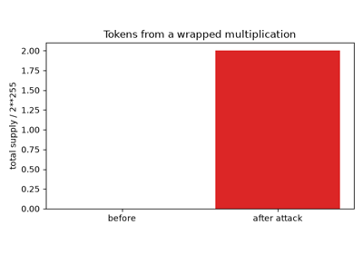
Integer overflow: minting tokens from nothing (BeautyChain, 2018)